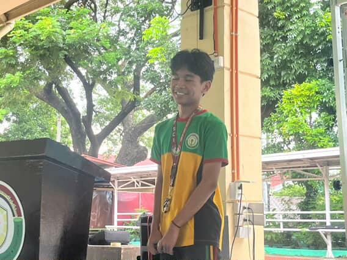
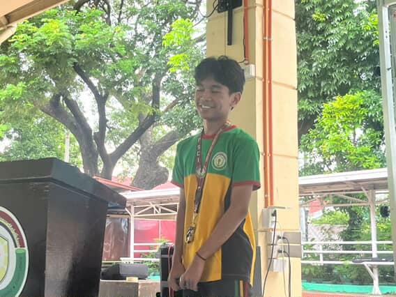

BUWAN NG WIKA
During the Buwan ng Wika, I was able to nurture my appreciation for Filipino culture and deepen my understanding of our national heroes, language, and history. The event reminded me how important it is to value and preserve our identity as Filipinos through our words and traditions. I participated in the “Tagisan ng Talino,” which gave me the chance to showcase what I know while learning from others.


INTRAMURALS
The Intramurals taught me that many students have a passionate and determined spirit for sports, showing that talent and dedication are not just in academics. Through the games, I learned the importance of teamwork, discipline, and respect, both in victory and defeat. I joined basketball, volleyball, and Mobile Legends, where I experienced the excitement of competition. This event made me realize that sports can also build character, strengthen friendships, and bring the school community together.
SCIENCE MONTH
Science Month helped me develop my research and innovation skills by encouraging me to think creatively and transform simple ideas into bigger, more meaningful projects. It made me see how science is not only about theories but also about solving real-life problems through discovery and invention. I joined the “STEMazing” event, which allowed me to explore and present scientific concepts in an engaging way.
AP MONTH
The celebration of AP Month made me reflect on our rights, freedom, and responsibilities as citizens, especially in relation to issues like the West Philippine Sea. I learned how important it is to understand and protect our country's resources. As part of the event, I shared an insight expressing my thoughts about the West Philippine Sea. The experience reminded me that being informed and involved is part of being a responsible Filipino.
 

TEACHERS' DAY
Teachers' Day was a meaningful celebration that allowed me to express my gratitude and appreciation to the people who guide and inspire us every day. It reminded me of how much effort, patience, and dedication teachers give to help students learn and grow not only academically but also as individuals. During the celebration, I enjoyed the time with my teachers and classmates.